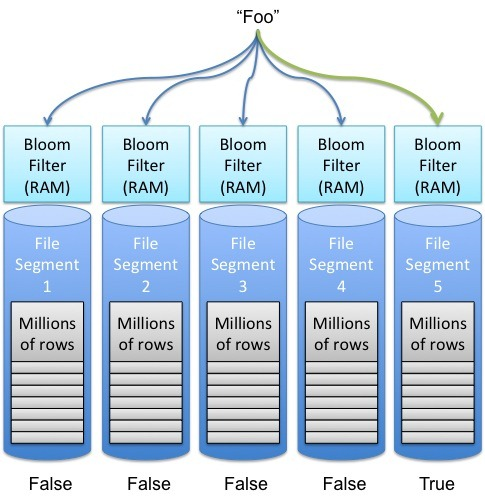

Snippets
NOSQL
Estruturas de Dados para SD
Qualquer que seja a escolha de algoritmo para fazer o particionamento dos dados entre servidores, sobra ainda a questão de como manipular os dados dentro do servidor. Idealmente, toda operação seria executada a partir da memória principal, tendo assim a menor latência possível. Contudo, para que se tenha também durabilidade das operações executadas, para que os dados manipulados sobrevivam a reinicializações do servidor, intencionais ou não, é preciso armazenar os dados em memória estável, da qual a mais comum são os discos rígidos.
É notório que escritas em disco são muito mais lentas que em memória principal, mas o que exatamente é lento no acesso ao disco? Essencialmente, o posicionamento da cabeca de leitura/escrita na trilha correta do disco, pois esta operação é mecânica. Por esta razão, acessos aleatórios são mais custosos que acessos sequenciais, pois neste o custo de posicionamento é pago apenas uma vez. Por este motivo, muitos bancos de dados, especialmente DHT pois tem seu uso focado em quantidades muito grandes de dados, gerados e acessados com grande velocidade, tentam acessar o disco sempre de forma sequencial. Alguns bancos de dados, como o Cassandra, armazenam os dados na forma de uma Log Structured Merge Tree, ou LSMT.
Log Structured Merge Tree
Uma Log Structured Merge Tree é uma forma de se armazenar dados em disco de forma de forma quase sempre sequencial, minimizando assim os o impacto da durabilidade no desempenho do sistema. Considere um banco armazenando uma pequena quantidade de dados, que cabe em memória principal. Na LSMT, operações de escrita são adicionadas a um commit log, em disco, e somente então são executadas em memória principal e confirmadas para o cliente; a estrutura que armazena os dados em memória é denominada memory table, ou simplesmente memtable. Neste cenário o acesso ao disco na escrita é sequencial, o melhor que se pode ter em um disco, e a recuperação dos dados é feita diretamente da memória, rápida.

No caso de uma reinicialização do processo, a reexecução do commit log restaurará o estado da memtable. Contudo, se o commit log for extenso, reexecutá-lo demandará um tempo significativo. Uma forma de acelerar o processo é fazer snapshots da memtable de forma sincronizada com a escrita no log. Isto é, digamos que todas as operações de escrita, até a décima, estão salvas no commit log e refletidas na memtable. Digamos também que todas as operações são modificações da mesma linha do banco de dados em memória. Se um snapshot é tomado, ele será correspondente ao commit log, isto é, conterá o efeito de exatamente as mesmas 10 operações, mas de forma mais compacta que o log, uma vez que o log conterá dez operações e o snapshot somente uma linha de dados. Após o snapshot ser concluído, o log correspondente pode ser apagado. Novas operações de escrita devem ser armazenadas em um novo log e, no caso de uma reinicialização, primeiro se deve restaurar o snapshot e então o novo log. Para lidar com corrupções de arquivo no sistema, pode ser uma boa ideia manter mais do que o último log e snapshot, já que a recuperação do estado exigiria voltar mais atrás na reexecução de operações.
Observe que, além da escrita dos logs, todos os outros acessos ao disco também são sequenciais, seja o flush das memtables, ou a leitura dos snapshots para recuperação e do commit log para reexecução, e já que operações de leitura são todas respondidas da memória, o sistema terá um excelente desempenho. Contudo, há outro limitante de desempenho importante, relacionado à premissa pouco realista de que os dados cabem todos em memória. Isto é, se os dados não cabem em memória, snapshots serão importantes não somente para permitir coletar lixo dos logs, isto é, dados obsoletos, mas também, para usar a capacidade de armazenamento dos discos.
Consideremos então um cenário em que a memtable cabe apenas n entradas; quando a operação para adicionar \(n+1\)-ésima entrada à memtable é recebida, um flushs dos dados para um novo snapshot é feito e a memtable é resetada, liberando espaço em memória. Para melhorar o desempenho, estas descargas podem ser feitas proativamente antes da chegada de novas entradas e fora do caminho crítico da operação de escrita, mas isto é apenas uma otimização e portanto não a consideraremos aqui.
Neste novo fluxo, os arquivos em disco não correspondem mais a snapshots do banco de dados, então nos referiremos a eles como stable storage tables, ou sstables, em oposição às memtables, pelo menos por enquanto.
Compactações
Apesar deste novo fluxo de escrita aumentar a capacidade de armazenamento do nosso banco de dados, ele traz problemas para o fluxo de leitura. Digamos que a chave \(k\) teve um valor atribuído e descarregado em uma sstable em diversas ocasiões. O primeiro problema aqui é que há vários valores antigos associados a \(k\), inutilmente e ocupando espaço, isto é, lixo. O segundo é que caso o valor associado a \(k\) seja requisitado, o sistema deverá retornar a última versão, que pode estar em diversos arquivos. Para lidar com ambos os problemas, podemos compactar as sstables juntas, eliminados dados obsoletos e minimizando o número de arquivos a serem pesquisados no caso de leitura. Caso a sstables estejam ordenadas, o procedimento de compactação pode ser feito como a união de dois segmentos de dados no merge sort, isto é, iterando-se paralelamente nos dois arquivos e escolhendo sempre a menor chave da vez e movendo-a para um novo segmento que conterá a união dos dados. A figura a seguir mostra um exemplo que várias sstables de nível 0, aquelas geradas por flushs, são unidas gerando sstables de nível 1 e assim sucessivamente. Observe como as compactações geram uma árvore (na verdade, uma floresta), razão do nome merge tree.

No caso de uma pesquisa, somente as tabelas mais à direita e de nível mais alto precisam ser consultadas e portanto as sstables já usadas como entrada podem ser eliminadas como lixo do sistema. Ainda assim, no caso de uma leitura, diversas sstables potencialmente contém o dado a ser retornado. O problema se agrava em sistemas em que partes do dado possam ser gravadas independentemente, como no CassandraDB, em que cada coluna é independente das outras. Diversas propostas poderiam ser feitas para se identificar mais rapidamente se uma sstable contém uma chave.
Por exemplo, pode-se associar a cada tabela um bitmap indicando a presença ou não de uma certa chave, mas esta abordagem obviamente falha se o espaço de chaves for grande. Outra possibilidade é lembrar a faixa de chaves contida na tabela. Esta estratégia pode ser útil caso haja localidade no espaço de chaves no momento da escrita, mas falhará miseravelmente se o espaço de chaves for usado uniformemente, resultando em faixas grandes entre a menor e maior chaves de cada tabela. Como acelerar a identificação das sstables pertinentes? Entram em cena os filtros de Bloom.
Filtros de Bloom
De acordo com nossa fonte mais que confiável, a Wikipedia
Bloom Filter
A Bloom filter is a space-efficient probabilistic data structure, conceived by Burton Howard Bloom in 1970, that is used to test whether an element is a member of a set. False positive matches are possible, but false negatives are not, thus a Bloom filter has a 100% recall rate. In other words, a query returns either "possibly in set" or "definitely not in set".
Se associarmos a cada sstable um filtro de Bloom, então só será preciso lê-la se o filtro correspondente disser que a chave possivelmente está contida, como no seguinte exemplo.

Mas como exatamente construímos um filtro de Bloom? Iniciamos com um vetor de bits inicialmente zerados e um conjunto finito de funções de hash cujo resultado seja uniformemente distribuído no tamanho do vetor de bits. Para cada elemento colocado no conjunto a ser refletido pelo filtro, aplicamos cada uma das funções hash e colocamos o bit 1 na posição do vetor igual ao resultado da função. No exemplo a seguir, inserimos os elementos x, y e z e usamos três funções hash.

Na consulta, cada elemento passa por pelas mesmas funções hash. Se algum dos índices apontados não estiver com um 1, como no caso do c, no exemplo, o elemento não pertence ao conjunto. Caso contrário, o filtro responderá que é possível que pertença.
Mas quão bom é um filtro de Bloom na identificação do das sstables? Ou, de outra forma, quais fatores influenciam na taxa de falsos positivos do filtro?
- o número \(n\) de elementos no conjunto, uma vez que quanto mais elementos, mais bits 1;
- o número \(k\) de hashes, pois quanto mais hashes, mais bits transformados em 1; e,
- o número \(m\) de bits no vetor, pois quanto menos bits, mais colisões de bits.
De forma mais precisa,
- a probabilidade de setar um certo bit na inserção de um elemento é \(1/m\), e
- a probabilidade de não setar tal bit é \(1 - 1/m\);
- a probabilidade de \(k\) hashes não setarem um bit é \((1 - 1/m)^k\);
- a probabilidade de não setar um bit após \(n\) inserções é \((1 - 1/m)^{kn}\);
- a probabilidade de setar um bit após \(n\) inserções é \(1 - (1 - 1/m)^{kn}\)
Logo,
- a probabilidade de falso positivo \(p = (1 - (1 - 1/m)^{kn})^k \approx (1 - e^{-kn/m})^k\) O que nos permite chegar à relação
- \(m/n = - 1.44\log_2 p\), em que podemos calcular \(m\) em função do \(n\) esperado e do \(p\) desejado. E podemos também identificar o \(k\) ótimo para a situação, pela equação
- \(k = - \frac{\ln p}{\ln 2} = - \log_2 p\)
Uma forma "simples" de visualizar este resultado é dada pela figura a seguir, em que o eixo Y dá a taxa de falsos positivos do filtro em função do número de elementos inseridos, indicado no eixo X, para diversas configurações, apresentadas como curvas. Por exemplo, com um filtro com \(m = 2^{24}b = 2MB\), após 1 milhão de inserções, tem-se probabilidade de falsos positivo \(p = 0,0001\).
, como mostra a hierarquia a seguir, adaptada de jepsen.io.
e é aí que entram os modelos de consistência.